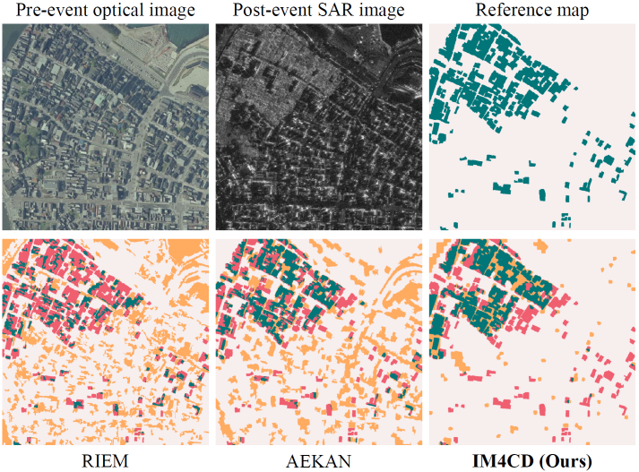
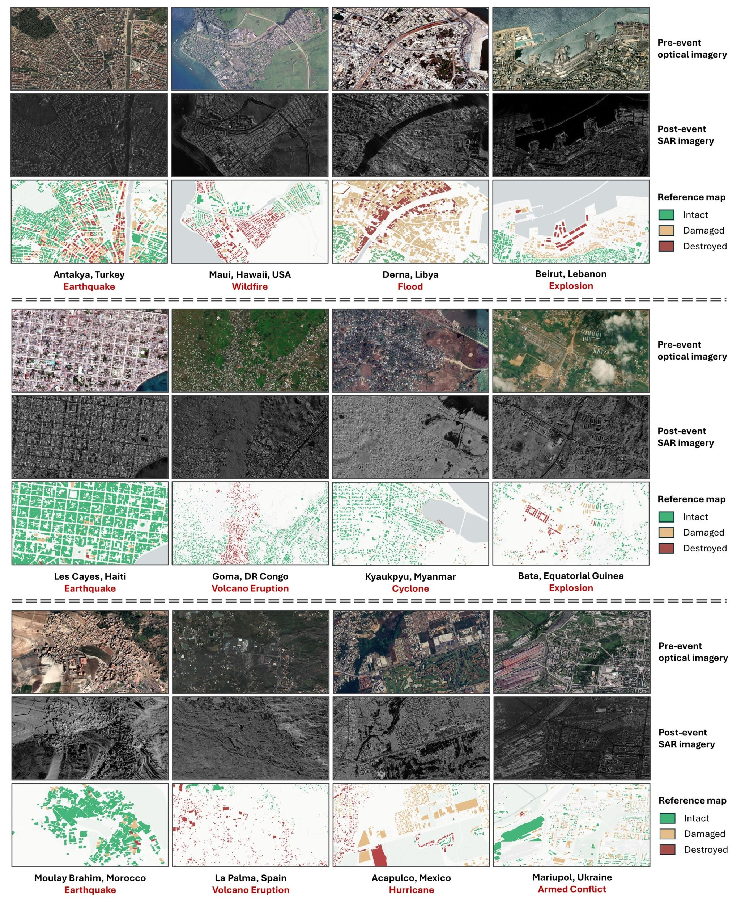
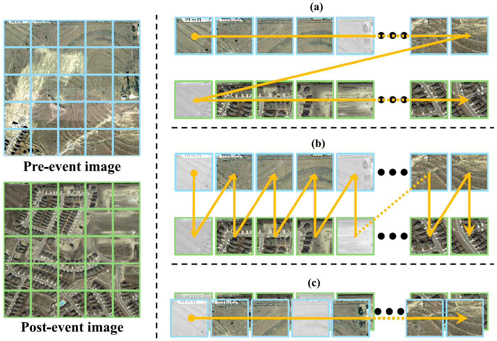
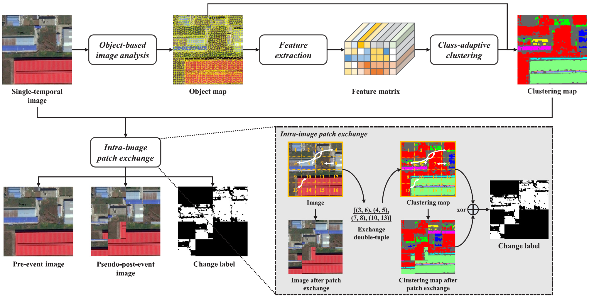

About
Hongruixuan Chen is a JSPS Research Fellow at The University of Tokyo. He received his Ph.D. from the Machine Learning and Statistical Data Analysis Lab at The University of Tokyo, under the supervision of Prof. Naoto Yokoya. He serves as co-lead of WG-MIA (Machine/Deep Learning for Image Analysis) within the Image Analysis and Data Fusion Technical Committee (IADF TC). He was also an academic visitor at the Photogrammetry and Remote Sensing Group, ETH Zurich, and a former intern at The United Nations Satellite Center (UNOSAT). His research focuses on leveraging machine learning and computer vision to monitor, characterize, and interpret changes on Earth's surface, with the goal of advancing urban planning, resource management, environmental protection, and sustainable development.
News
- 2026.02Three co-authored papers have been accepted by CVPR.
- 2026.02One paper has been accepted by ISPRS J P&RS (link).
- 2026.01One co-authored paper has been accepted by JAG (link).
- 2026.01One co-authored paper has been accepted by IEEE TPAMI (link).
- 2025.12Two co-authored papers have been accepted by ISPRS J P&RS (link 1, link 2).
- 2025.11BRIGHT has been accepted by ESSD (link).
- 2025.10One co-authored paper has been accepted by NeurIPS 2025 (link).
- 2025.09Appointed as Co-Lead of Working Group on Machine/Deep Learning for Image Analysis (WG-MIA) of IEEE GRSS (link).
- 2025.08OpenEarthMap-SAR has been accepted by IEEE GRSM (link).
- 2025.08One co-authored paper has been accepted by ISPRS J P&RS (link).
- 2025.07I have successfully passed my Ph.D. defense. Many thanks to all those who have given me continuous support along the way!
- 2025.01BRIGHT and OpenEarthMap-SAR serve as the official datasets of IEEE GRSS Data Fusion Contest 2025 (link).
Selected Publications

Multimodal remote sensing change detection: An image matching perspective
ISPRS Journal of Photogrammetry and Remote Sensing, 2026

Earth System Science Data (ESSD), 2025

ChangeMamba: Remote sensing change detection with spatio-temporal state space model
IEEE Transactions on Geoscience and Remote Sensing (TGRS), 2024

Fourier domain structural relationship analysis for unsupervised multimodal change detection
ISPRS Journal of Photogrammetry and Remote Sensing, 2023

ISPRS Journal of Photogrammetry and Remote Sensing, 2023
Experience
Work & Overseas Experience
Education
Fundings
Services
Membership
- IEEE, Student Member
- IEEE Geoscience and Remote Sensing Society (GRSS), Student Member
Reviewer
- IEEE Transactions on Pattern Analysis and Machine Intelligence (TPAMI)
- IEEE Transactions on Image Processing (TIP)
- IEEE Transactions on Circuits and Systems for Video Technology (TCSVT)
- IEEE Transactions on Neural Networks and Learning Systems (TNNLS)
- IEEE Transactions on Geoscience and Remote Sensing (TGRS)
- International Journal of Computer Vision (IJCV)
- ISPRS Journal of Photogrammetry and Remote Sensing (P&RS)
- Medical Image Analysis (MedIA)
- Information Fusion (InfFus)
- International Journal of Applied Earth Observation and Geoinformation (JAG)
- IEEE/CVF Conference on Computer Vision and Pattern Recognition (CVPR)
- European Conference on Computer Vision (ECCV)
- Other 50+ journals & conferences ...
Awards & Honors
- 2026 — UTokyo President’s Award for Academic Achievement
- 2026 — UTokyo GSFS Dean’s Award for Academic Achievement
- 2026 — JSPS Research Fellow’s Special Allowance (Research Incentive Grant)
- 2024 — Japan Society for the Promotion of Science (JSPS) DC2 Research Fellowship
- 2023 — Japanese-Swiss Young Researchers' Exchange Programme Special 2023 Exchange Grant
- 2022 — The University of Tokyo Fellowship (Todai Fellowship)
- 2022 — Outstanding Graduate Student, Wuhan University
- 2021 — Wang Zhizhuo Innovation Talent Scholarship, Wuhan University
- 2021 — National Scholarship for Postgraduates, Ministry of Education
- 2021 — First Prize of Academic Scholarship, Wuhan University
- 2021 — Outstanding Graduate Student, Wuhan University
- 2020 — National Scholarship for Postgraduates, Ministry of Education
- 2020 — First Prize of Academic Scholarship, Wuhan University
- 2020 — Outstanding Graduate Student, Wuhan University
- 2019 — LIESMARS Scholarship for Excellent First-Year Postgraduates
- 2019 — Excellent Graduate of Anhui Province
- 2018 — First Prize of Academic Scholarship, Anhui University
- 2018 — Second Prize, Esri Cup GIS Software Development Contest in China
- 2018 — Outstanding Prize, National Geomatics Contest in Programming
- 2018 — Meritorious Winner, US Mathematical Contest in Modeling
- 2017 — Second Prize, China National Mathematical Contest in Modeling
- 2017 — National Scholarship for Undergraduates, Ministry of Education
- 2016 — Anhui University Scholarship for Excellent Students